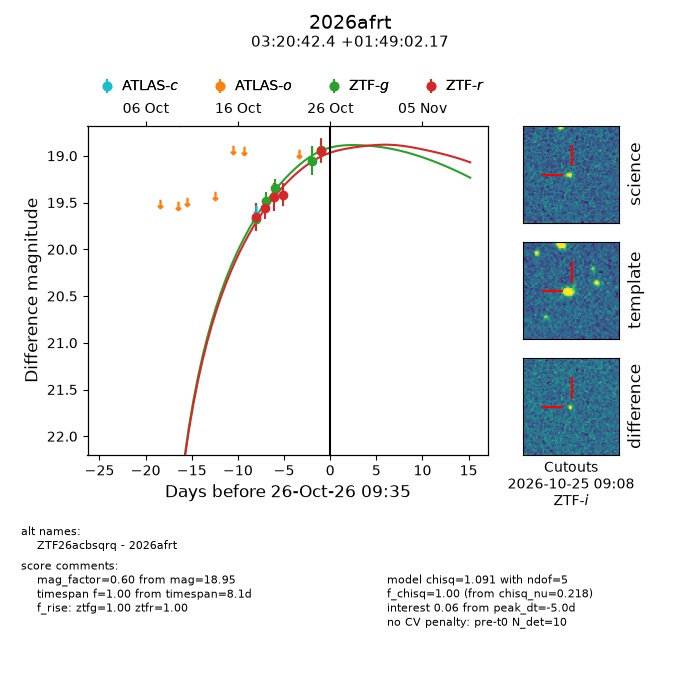
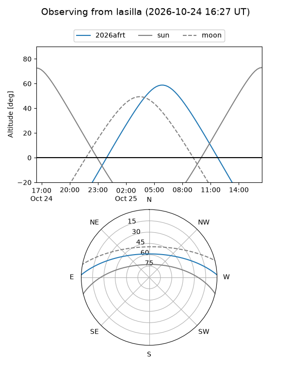
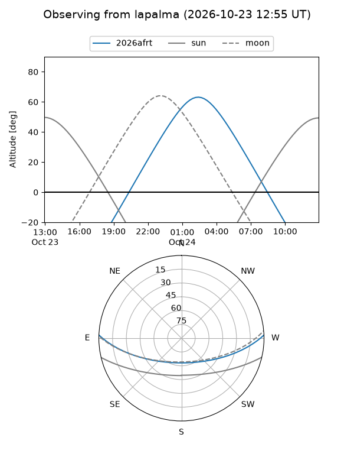
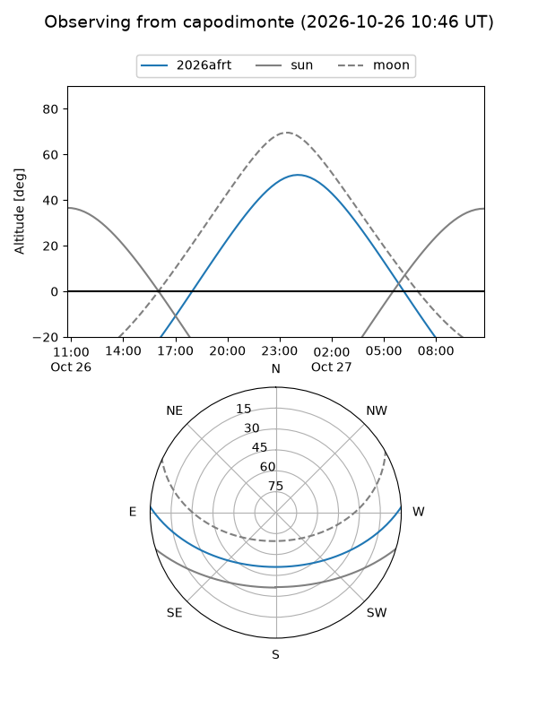
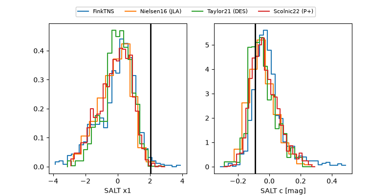

2026afrt
Target 2026afrt at 2026-10-26 09:36
Aliases and brokers:
FINK-ZTF: ztf.fink-portal.org/ZTF26acbsqrq
Lasair-ZTF: lasair-ztf.lsst.ac.uk/objects/ZTF26acbsqrq
ALeRCE-ZTF: alerce.online/object/ZTF26acbsqrq
YSE-PZ: ziggy.ucolick.org/yse/transient_detail/2026afrt
TNS name: wis-tns.org/object/2026afrt
Direct TNS query: direct search
alt names
ZTF26acbsqrq (ztf,fink_ztf)
2026afrt (tns,yse)
Coordinates:
equatorial (ra, dec) = 50.1768,+1.81727
equatorial (HMS+DMS) = 03:20:42.44,+01:49:02.17
galactic (l, b) = (180.1193,-43.86665)
Flags:
peak dt: -5.0
Photometry:
last ztfg=18.94, ztfr=18.95
5 ztfg, 5 ztfr detections
Lightcurve

Visibility



Additional plots
